GridView의 열 고정 기능 예제입니다. 이 기능은 아래의 속성과 함수로 사용할 수 있습니다. - fixedColumn : (속성) 좌측 열 고정 - fixedRightColumn : (속성) 우측 열 고정 - setFixedColumn : (함수) 좌측 열 고정 - setFixedRightColumn : (함수) 우측 열 고정
좌측 열 고정 적용
우측 열 고정 적용
좌측과 우측 열 고정 적용
좌측과 우측 열 고정 적용 - 스크립트
영역 [좌측 열 고정 적용]의 GridView를 확인합니다.
좌측에서 1번째 열이 고정되었습니다.
[브라우저(Chrome) 실행 예시]
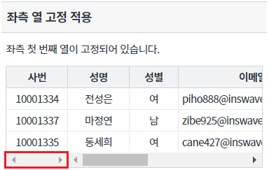
영역 [우측 열 고정 적용]의 GridView를 확인합니다.
우측에서 1번째 열이 고정되었습니다.
[브라우저(Chrome) 실행 예시]
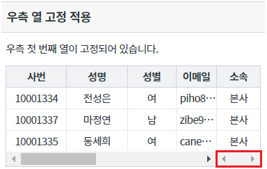
영역 [좌측과 우측 열 고정 적용]의 GridView를 확인합니다.
좌측에서 1번째 열과 우측에서 1번째 열이 고정되었습니다.
[브라우저(Chrome) 실행 예시]
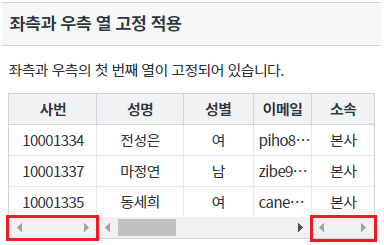
영역 [좌측과 우측 열 고정 적용 - 스크립트]의 GridView를 확인합니다.
열 고정이 적용되지 않았습니다.
[브라우저(Chrome) 실행 예시]
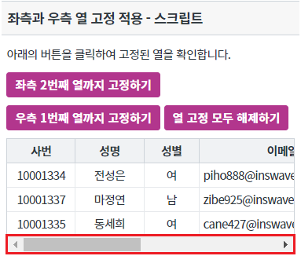
버튼 좌측 2번째 열까지 고정하기를 클릭합니다.
좌측에서 2번째 열이 고정됩니다.
[브라우저(Chrome) 실행 예시]
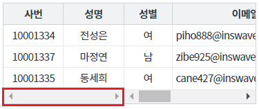
버튼 우측 1번째 열까지 고정하기를 클릭합니다.
우측에서 1번째 열이 고정됩니다.
[브라우저(Chrome) 실행 예시]
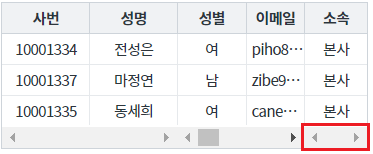
버튼 열 고정 모두 해제하기를 클릭합니다.
고정된 열이 모두 해제됩니다.
[브라우저(Chrome) 실행 예시]
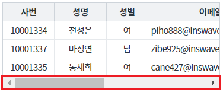
GridView의 속성을 정의합니다.
[필수] fixedColumn="설정 값" //좌측에서 고정할 열의 위치
예시) fixedColumn="1" //좌측에서 1번째 열을 고정
그림 1.웹스퀘어5 SP5 스튜디오의 Property View(속성창) 예시
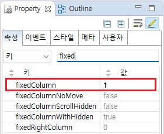
[소스 코드 예시]
<!-- gridView 의 소스 본문 예시 --> <w2:gridView fixedColumn="1" dataList="data:dlt_member" style="height: 100px;"> <!-- 중략 --> </w2:gridView>
GridView의 속성을 정의합니다.
[필수] fixedRightColumn="설정 값" //우측에서 고정할 열의 위치
예시) fixedRightColumn="1" //우측에서 1번째 열을 고정
그림 2.웹스퀘어5 SP5 스튜디오의 Property View(속성창) 예시
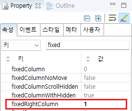
[소스 코드 예시]
<!-- gridView 의 소스 본문 예시 --> <w2:gridView fixedRightColumn="1" dataList="data:dlt_member" style="height: 100px;"> <!-- 중략 --> </w2:gridView>
GridView의 속성을 정의합니다.
[필수] fixedColumn="설정 값" //좌측에서 고정할 열의 위치
예시) fixedColumn="1" //좌측에서 1번째 열을 고정
[필수] fixedRightColumn="설정 값" //우측에서 고정할 열의 위치
예시) fixedRightColumn="1" //우측에서 1번째 열을 고정
그림 3.웹스퀘어5 SP5 스튜디오의 Property View(속성창) 예시
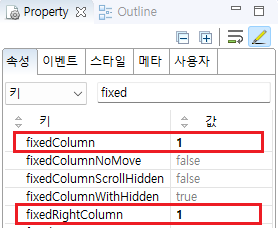
[소스 코드 예시]
<!-- gridView 의 소스 본문 예시 --> <w2:gridView fixedRightColumn="1" fixedColumn="1" dataList="data:dlt_member" style="height: 100px;"> <!-- 중략 --> </w2:gridView>
GridView의 함수 setFixedColumn, setFixedRightColumn을 사용합니다.
- setFixedColumn : 좌측 열 고정
- setFixedRightColumn : 우측 열 고정
[소스 코드 예시]
//예제 파일의 스크립트 "scwin.btn_ex1_1_onclick", "scwin.btn_ex1_2_onclick", "scwin.btn_ex1_3_onclick"을 참고하세요. //GridView 'grd_exam4'의 좌측에서 두번째 열까지 고정하기 grd_exam4.setFixedColumn(2); //GridView 'grd_exam4'의 우측에서 첫번째 열까지 고정하기 grd_exam4.setFixedRightColumn(1); //GridView 'grd_exam4'의 열 고정 해제 grd_exam4.setFixedColumn(0); grd_exam4.setFixedRightColumn(0);
fixedColumn
fixedRightColumn
setFixedColumn( fixedColNum )
setFixedRightColumn( count )
[웹스퀘어5 SP5 개발 가이드] GridView
링크 : https://docs1.inswave.com/sp5_user_guide/bc10c1b82c9a2a0b#e1c4658baf7e726f
[웹스퀘어5 SP5 개발 가이드] GridView 틀 고정
링크 : https://docs1.inswave.com/sp5_user_guide/86bdcf48029b958b#ebb334cc44295cd2
GridView GridView 틀 고정
링크 : https://youtu.be/Kxh6WwZUUWo
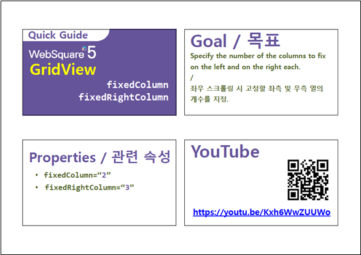
GridView GridView 틀 고정
링크 : https://youtu.be/vXsMm4ydtY4
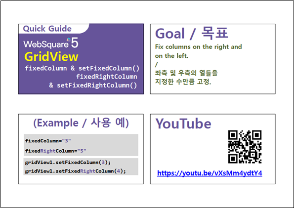